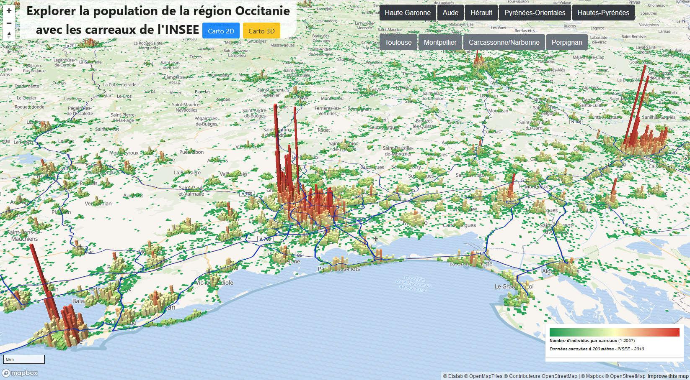

GeoViz avec Mapbox GL
Exemples d'applications en ligne de géovisualisations de données basées sur la bibliothèque JavaScript Mapbox GL
Animation
Morphologie urbaine de Paris par extrusion des volumes bâtis
Extrusion en 3D des données carroyées de l'INSEE en Occitanie

Géovisualisation 3de l'accessibilité au métro rennais (swipe map)
Géovisualisation et graphique des prix de l'immobilier résidentiel en France
Géovisualisation du marché immobilier résidentiel de l'aire urbaines de Nantes (DVF)
Géovisualisation du marché immobilier résidentiel en Ile-De-France en 2018 (DVF)
Géovisualisation 3D du bati extrudé avec le cadastre et le PLU
Géovisualisation du Service Public de la données
Tutoriel pour une produire une carte en ligne avec MapLibreGL (100% libre)
Pour aller plus loin > Pleins d'exemples de cartes en ligne / Blocks GitHubGist